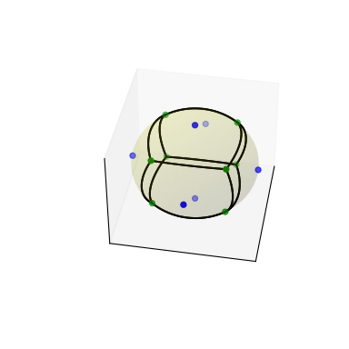

scipy.spatial.SphericalVoronoi¶
-
class
scipy.spatial.SphericalVoronoi(points, radius=1, center=None, threshold=1e-06)[source]¶ Voronoi diagrams on the surface of a sphere.
New in version 0.18.0.
- Parameters
- pointsndarray of floats, shape (npoints, ndim)
Coordinates of points from which to construct a spherical Voronoi diagram.
- radiusfloat, optional
Radius of the sphere (Default: 1)
- centerndarray of floats, shape (ndim,)
Center of sphere (Default: origin)
- thresholdfloat
Threshold for detecting duplicate points and mismatches between points and sphere parameters. (Default: 1e-06)
- Raises
- ValueError
If there are duplicates in points. If the provided radius is not consistent with points.
See also
VoronoiConventional Voronoi diagrams in N dimensions.
Notes
The spherical Voronoi diagram algorithm proceeds as follows. The Convex Hull of the input points (generators) is calculated, and is equivalent to their Delaunay triangulation on the surface of the sphere [Caroli]. The Convex Hull neighbour information is then used to order the Voronoi region vertices around each generator. The latter approach is substantially less sensitive to floating point issues than angle-based methods of Voronoi region vertex sorting.
Empirical assessment of spherical Voronoi algorithm performance suggests quadratic time complexity (loglinear is optimal, but algorithms are more challenging to implement).
References
- Caroli
Caroli et al. Robust and Efficient Delaunay triangulations of points on or close to a sphere. Research Report RR-7004, 2009.
- VanOosterom
Van Oosterom and Strackee. The solid angle of a plane triangle. IEEE Transactions on Biomedical Engineering, 2, 1983, pp 125–126.
Examples
Do some imports and take some points on a cube:
>>> import matplotlib.pyplot as plt >>> from scipy.spatial import SphericalVoronoi, geometric_slerp >>> from mpl_toolkits.mplot3d import proj3d >>> # set input data >>> points = np.array([[0, 0, 1], [0, 0, -1], [1, 0, 0], ... [0, 1, 0], [0, -1, 0], [-1, 0, 0], ])
Calculate the spherical Voronoi diagram:
>>> radius = 1 >>> center = np.array([0, 0, 0]) >>> sv = SphericalVoronoi(points, radius, center)
Generate plot:
>>> # sort vertices (optional, helpful for plotting) >>> sv.sort_vertices_of_regions() >>> t_vals = np.linspace(0, 1, 2000) >>> fig = plt.figure() >>> ax = fig.add_subplot(111, projection='3d') >>> # plot the unit sphere for reference (optional) >>> u = np.linspace(0, 2 * np.pi, 100) >>> v = np.linspace(0, np.pi, 100) >>> x = np.outer(np.cos(u), np.sin(v)) >>> y = np.outer(np.sin(u), np.sin(v)) >>> z = np.outer(np.ones(np.size(u)), np.cos(v)) >>> ax.plot_surface(x, y, z, color='y', alpha=0.1) >>> # plot generator points >>> ax.scatter(points[:, 0], points[:, 1], points[:, 2], c='b') >>> # plot Voronoi vertices >>> ax.scatter(sv.vertices[:, 0], sv.vertices[:, 1], sv.vertices[:, 2], ... c='g') >>> # indicate Voronoi regions (as Euclidean polygons) >>> for region in sv.regions: ... n = len(region) ... for i in range(n): ... start = sv.vertices[region][i] ... end = sv.vertices[region][(i + 1) % n] ... result = geometric_slerp(start, end, t_vals) ... ax.plot(result[..., 0], ... result[..., 1], ... result[..., 2], ... c='k') >>> ax.azim = 10 >>> ax.elev = 40 >>> _ = ax.set_xticks([]) >>> _ = ax.set_yticks([]) >>> _ = ax.set_zticks([]) >>> fig.set_size_inches(4, 4) >>> plt.show()
- Attributes
- pointsdouble array of shape (npoints, ndim)
the points in ndim dimensions to generate the Voronoi diagram from
- radiusdouble
radius of the sphere
- centerdouble array of shape (ndim,)
center of the sphere
- verticesdouble array of shape (nvertices, ndim)
Voronoi vertices corresponding to points
- regionslist of list of integers of shape (npoints, _ )
the n-th entry is a list consisting of the indices of the vertices belonging to the n-th point in points
Methods
Calculates the areas of the Voronoi regions.